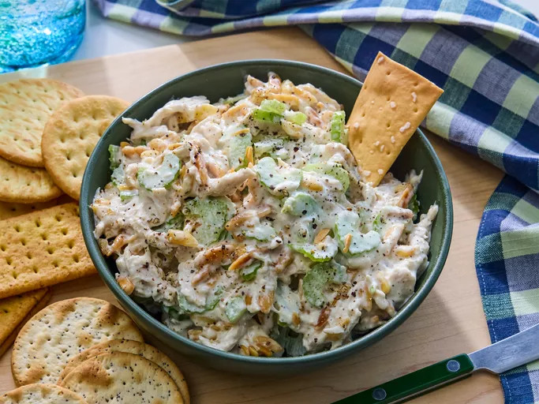

Chicken Salad
Home

Description
This creamy chicken salad recipe is the best and a family favorite!
Everyone needs this best chicken salad recipe in their collection!
This creamy homemade chicken salad is quick and easy to make.
With just a handful of everyday ingredients to make - it's perfect for warm weather picnics ,lunches or light dinners.
Ingredients
- ½ cup blanched slivered almonds
- ½ cup mayonnaise
- 1 tablespoon lemon juice
- ¼ teaspoon ground black pepper
- 2 cups chopped, cooked chicken meat
- 1 rib celery, chopped
Steps
- Place almonds in a frying pan.
Toast over medium-high heat, shaking frequently. Watch carefully, as they burn easily.
- Mix together mayonnaise, lemon juice, and pepper in a medium bowl.
- Toss the chicken, toasted almonds, celery and your mixed mayonnaise together.
- Enjoy your quick and easy salad!